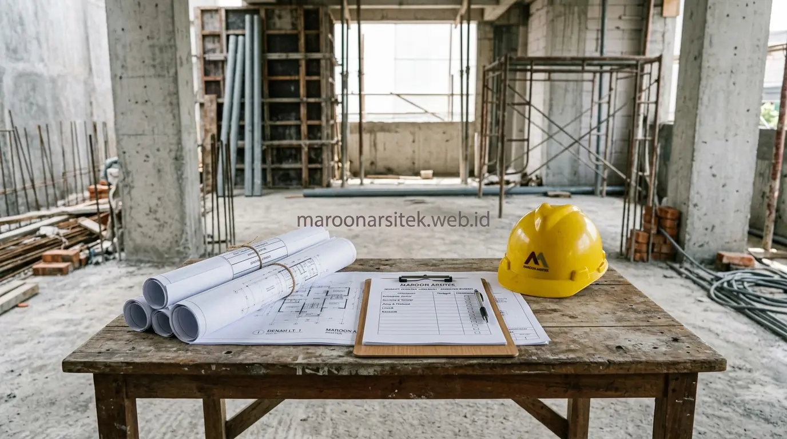

Kekhawatiran biaya renovasi yang terus bertambah biasanya muncul karena tidak ada rencana anggaran yang mengikat sejak awal, sehingga setiap tambahan pekerjaan dihitung secara terpisah tanpa kendali menyeluruh. Menggunakan layanan jasa renovasi rumah profesional dari Maroon Arsitek memberikan kepastian finansial, mutu material teruji, dan ketepatan waktu yang sulit didapatkan dari skema tukang harian lepas.
Kepastian Anggaran melalui Rencana Anggaran Biaya di Awal Proyek
Kontraktor renovasi menyusun rencana anggaran biaya (RAB) secara rinci sebelum pekerjaan fisik dimulai, mencakup volume material, upah tenaga kerja, dan estimasi waktu pengerjaan. Pemilik rumah dapat mengetahui total biaya final sejak awal tanpa kekhawatiran perkiraan yang berubah-ubah di tengah jalan.
- Perbedaan dengan Tukang Harian: Tukang harian umumnya tidak memiliki dokumen RAB terstruktur. Biaya dihitung berdasarkan hari kerja tukang dan pembelian material eceran yang muncul bertahap, sehingga pengeluaran akhir sering kali membengkak 30%–50% di luar perkiraan awal.
- Kendali Anggaran Terkunci: Dengan skema kontraktor, setiap komponen pekerjaan telah disepakati dalam kontrak kerja resmi, sehingga penambahan biaya hanya terjadi apabila ada permintaan perubahan lingkup (*change order*) dari pemilik rumah.
Transparansi Rincian Biaya Material dan Upah Kerja
Kebutuhan pemilik rumah terhadap kejelasan alokasi dana dijawab melalui pemisahan komponen material dan ongkos kerja secara transparan:
- Spesifikasi Material Jelas: Merek semen, mutu pasir, jenis pipa, ketebalan kabel, dan merek cat tercantum secara eksplisit di dokumen kontrak, memastikan pemilik rumah mendapatkan kualitas sesuai yang dibayarkan.
- Skema Pembayaran Berbasis Termin Fisik: Pembayaran dicairkan bertahap mengikuti persentase progres fisik di lapangan (misal: DP 20%, progres 50%, progres 80%, serah terima 100%), bukan membayar upah harian yang terus mengalir meski pekerjaan lambat.

Kepastian Jadwal dan Tanggung Jawab Penyelesaian Pekerjaan
Kontraktor renovasi bekerja berdasarkan kurva jadwal (*Time Schedule*) yang disepakati bersama. Hal ini memberikan kepastian tanggal penyelesaian proyek yang terukur:
- Fokus Penuh Tim Kerja: Kontraktor menempatkan tim tukang spesialis yang bekerja penuh waktu di satu proyek, berbeda dengan tukang harian yang kerap berpindah-pindah menangani proyek lain secara bersamaan.
- Sanksi Keterlambatan: Ikatan kontrak kerja memuat klausul denda keterlambatan yang mendorong kontraktor menyelesaikan seluruh pekerjaan tepat waktu sesuai komitmen awal.
Penanganan Kendala Teknis Tanpa Menghentikan Progres Konstruksi
Renovasi rumah lama sering kali memunculkan kendala tak terduga, seperti struktur kolom yang retak tersembunyi di balik dinding atau jalur pipa air bocor di dalam dak beton:
- Dukungan Tenaga Ahli Struktur & Arsitek: Tim kontraktor memiliki insinyur teknik yang dapat langsung memberikan solusi perkuatan struktur tanpa harus menghentikan jalannya renovasi.
- Cadangan Tenaga Kerja Fleksibel: Jika salah satu pekerja berhalangan hadir, manajemen kontraktor segera menyediakan tenaga pengganti berkualifikasi setara sehingga pekerjaan harian tetap berjalan lancar.
Kejelasan Tanggung Jawab atas Hasil Pekerjaan Renovasi
Kontraktor renovasi memegang tanggung jawab hukum dan teknis penuh atas seluruh hasil renovasi:
- Pekerjaan diawasi langsung oleh mandor dan pengawas lapangan (*site supervisor*) untuk memastikan kerapian pemasangan keramik, ketegakan plesteran dinding, dan kerapian instalasi listrik.
- Apabila ditemukan ketidaksesuaian hasil kerja dengan gambar rencana, kontraktor berkewajiban membongkar dan merapikan kembali atas biaya kontraktor sendiri.
Masa Garansi sebagai Bagian dari Perlindungan Klien
Keunggulan terbesar memakai kontraktor profesional adalah perlindungan jangka panjang pasca serah terima rumah:
- Sertifikat Garansi Pemeliharaan Tertulis: Memberikan jaminan perbaikan gratis apabila terjadi kebocoran atap dak, rembesan dinding, atau masalah instalasi air dalam periode retensi (umumnya 1 hingga 3 bulan).
- Ketenangan Pikiran (Peace of Mind): Pemilik rumah tidak perlu pusing mencari tukang baru dan mengeluarkan biaya ekstra jika muncul kendala minor pasca renovasi selesai.